כשהצנרת נפגעת: טרשת, התקף לב, שבץ, לחץ דם גבוה ודליות
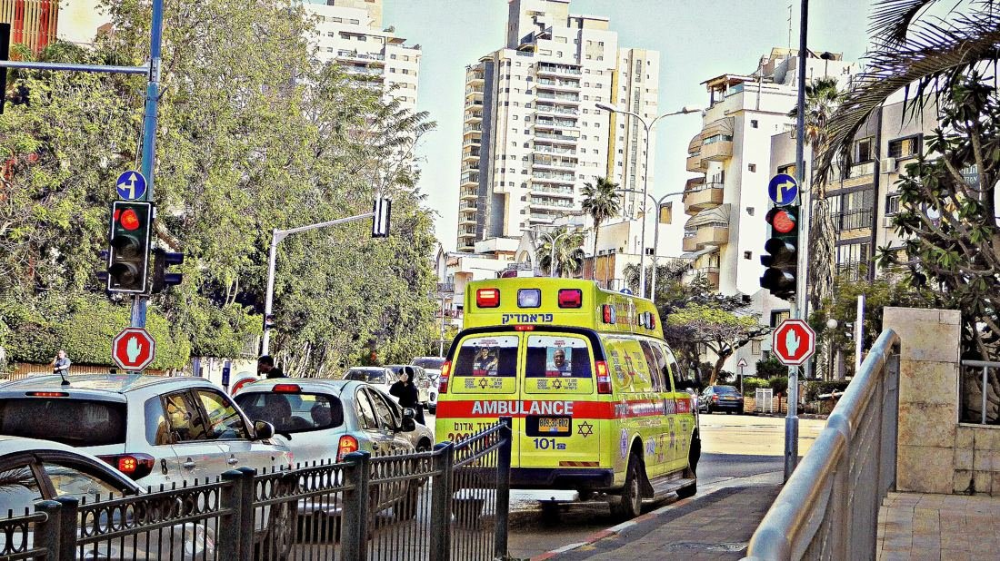
בני אדם בעולם מתים בכל שנה ממחלות לב וכלי דם.
ארגון הבריאות העולמי (WHO)
מתחיל בשכבה דקה של תאים בצד הפנימי של העורק.
עורקים, נימים וורידים: כ־100,000 ק״מ של צינורות.
הצינור נסתם
חסימה בעורק של הלב
חסימה או דימום במוח
"הרוצח השקט"
כשהמסתמים בוורידים לא נסגרים
מה בידיים שלנו, ומה עושים בבית החולים
בצנרת במטבח מצטברים לאט שומן ושאריות. הצינור הולך ונעשה צר, עד שהמים כמעט לא עוברים.
גם בעורקים יכולה להיווצר "סתימה" כזו.
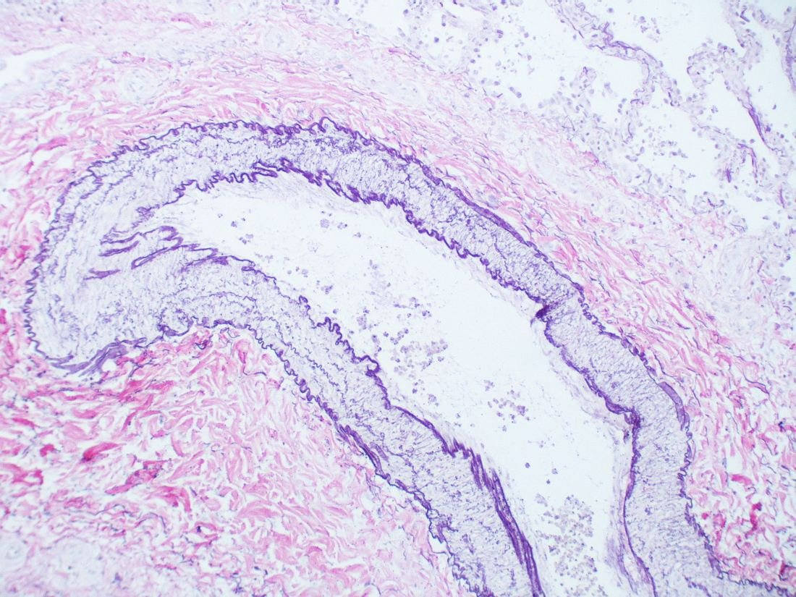
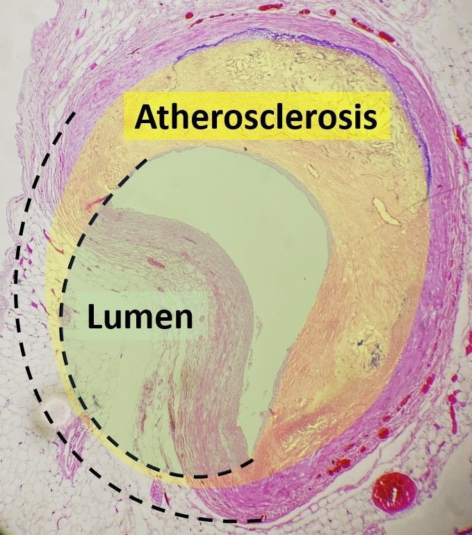
תזכורת: בצד הפנימי של העורק יש אנדותל, שכבת תאים אחת חלקה. כשהיא נפגעת, מתחילה הבעיה.
עישון, לחץ דם גבוה וסוכר גבוה פוגעים באנדותל.
כולסטרול (שומן) ותאים מצטברים מתחת לאנדותל.
נוצר רובד: גוש קשה בדופן העורק.
החלל צר, הדופן קשיחה, פחות דם עובר.
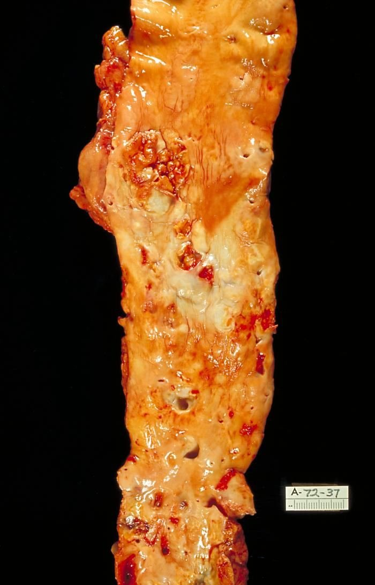
טרשת מתפתחת במשך עשרות שנים, בדרך כלל בלי כאב. כל עוד מגיע מספיק דם לרקמה, אין סימנים.
1. רובד בעורק כלילי (העורק שמספק דם לשריר הלב) נסדק.
2. על הסדק נוצר קריש דם, והעורק נחסם.
3. תאי שריר הלב שאחרי החסימה לא מקבלים חמצן, ומתים.
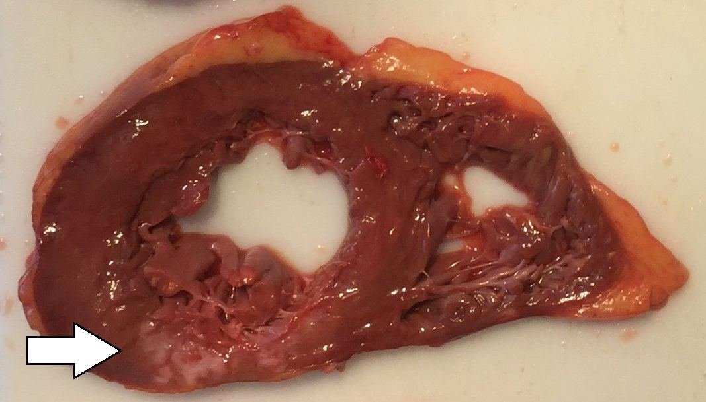
כאב לוחץ בחזה שמתפשט ליד השמאלית או ללסת, הזעה, קוצר נשימה.
⏱ מיד ל־101!
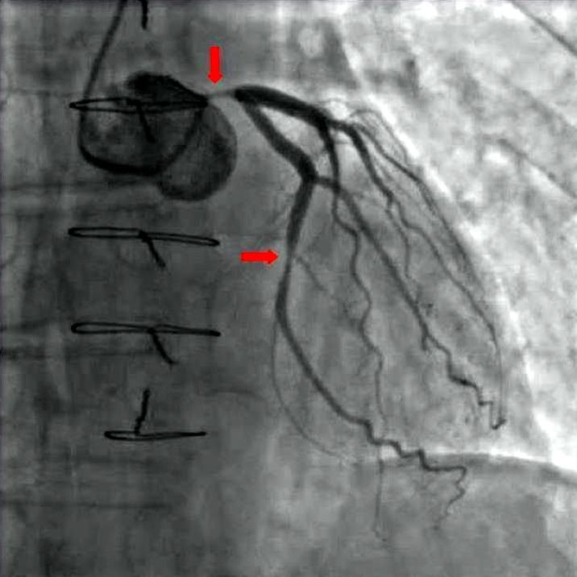
קריש סוגר עורק במוח. תאי המוח באזור לא מקבלים חמצן.
עורק במוח נקרע, ודם יוצא לרקמת המוח.
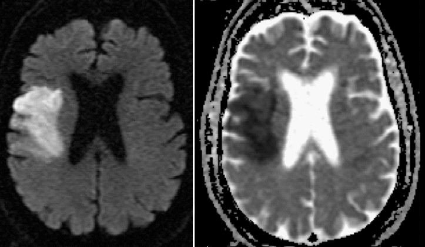
אדם בן 70 פתאום לא מצליח להרים את יד ימין, וזווית הפה שלו צונחת.
1. מה כנראה קורה?
2. באיזה צד של המוח הבעיה?
3. מה עושים עכשיו?
לחץ דם תקין
סיסטולי / דיאסטולי (מ״מ כספית)
יתר לחץ דם
ומעלה, בכמה מדידות
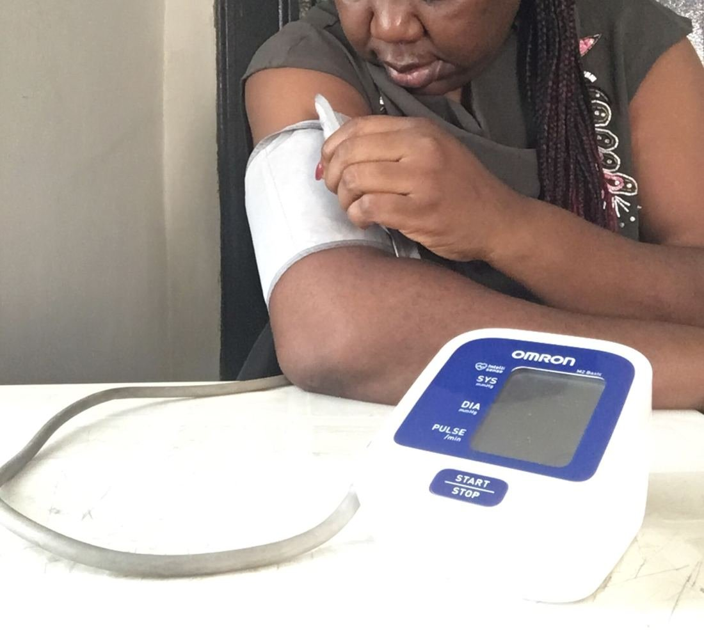
אין כאב ואין תחושה מיוחדת. אנשים חיים איתו שנים בלי לדעת.
פוגע באנדותל, מאיץ טרשת עורקים ומעמיס על הלב.
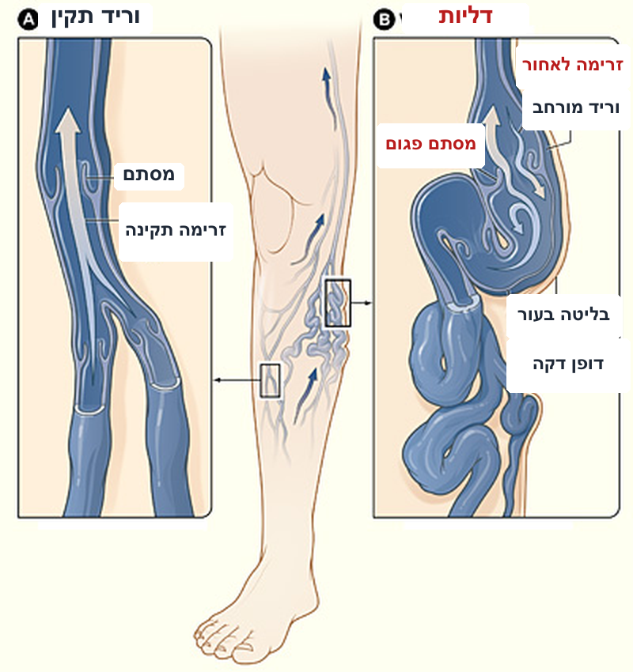
המסתמים נסגרים כשהדם נע לאחור. הדם זורם רק אל הלב.
המסתם פגום. הדם זורם גם לאחור ומצטבר, והווריד מתרחב ומתפתל מתחת לעור.
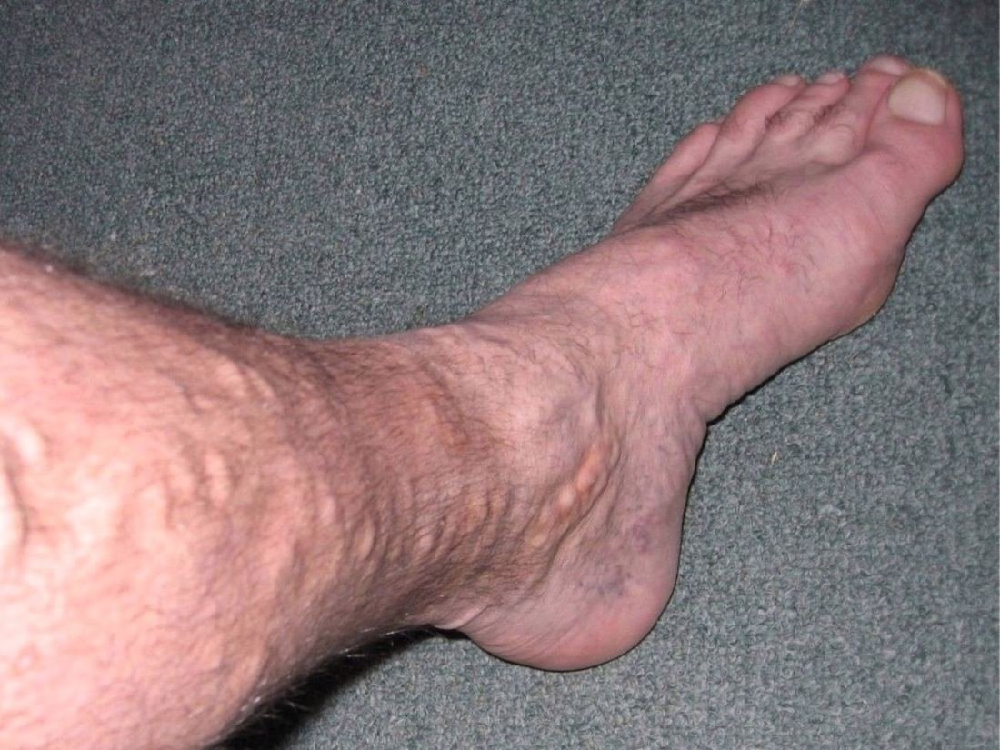
טיסה של 12 שעות. למה ממליצים לקום, ללכת ולהזיז את כפות הרגליים?
רמז: מה קורה לוורידים כששרירי השוק מתכווצים?
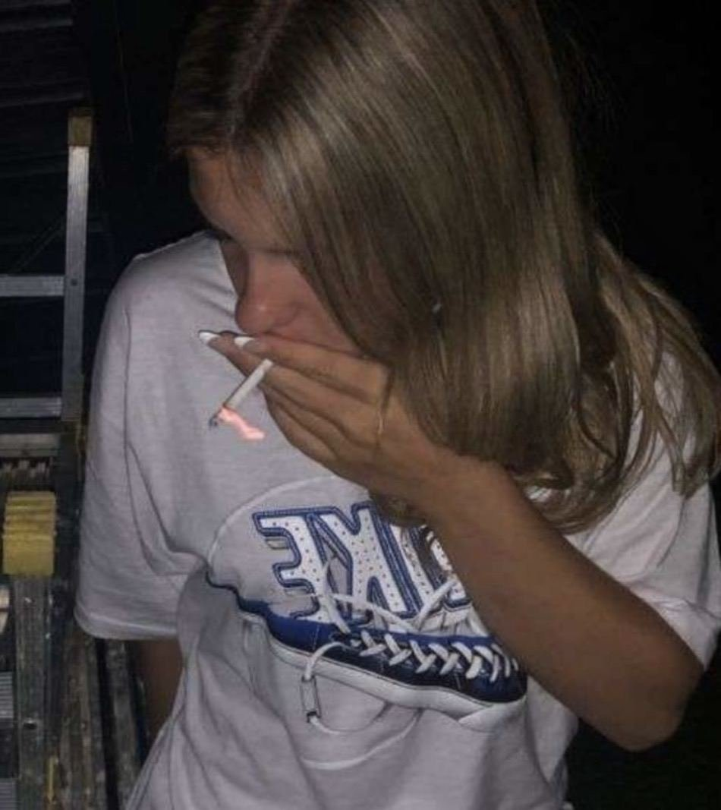
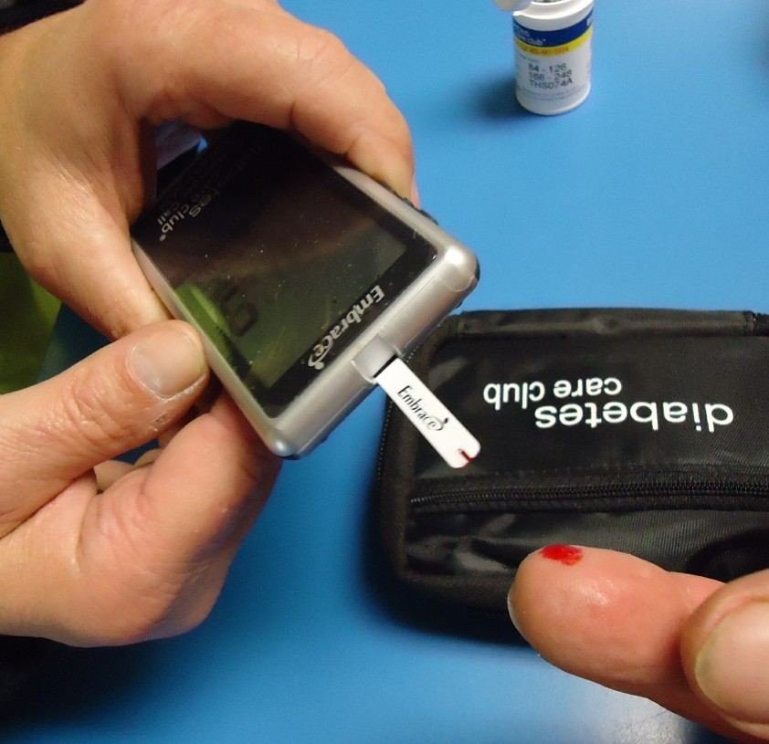
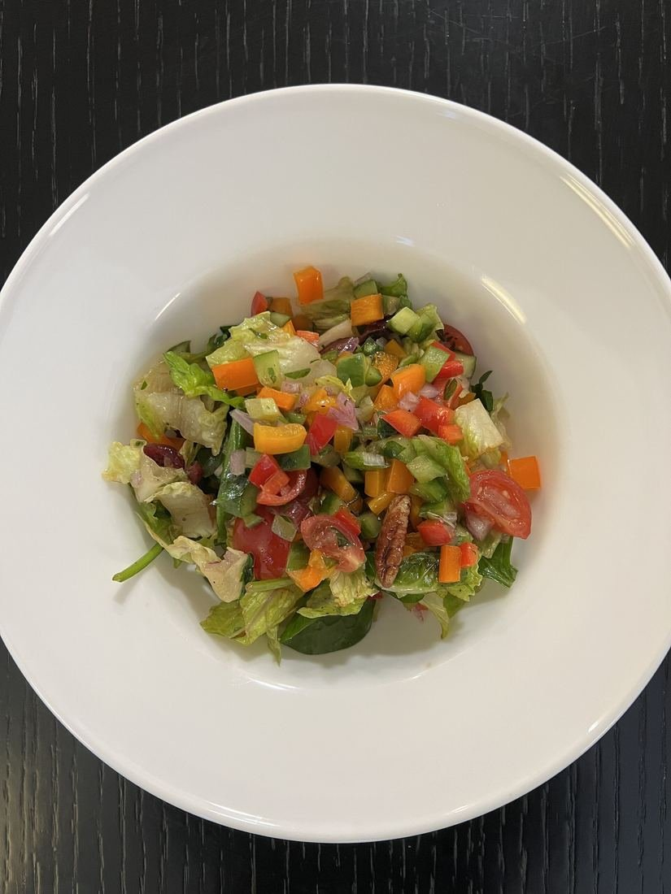
עישון, תזונה, תנועה, משקל, לחץ נפשי.
גיל ותורשה (גנטיקה).
מגלה יתר לחץ דם, שלרוב לא מרגישים.
רמת כולסטרול ורמת גלוקוז (סוכר) בדם.
בודקים את פעילות הלב ואת זרימת הדם בעורקים הכליליים.
הסביבה הפנימית של הגוף נשמרת בטווח מסוים (הומיאוסטזיס). בדיקות מגלות סטייה מהטווח, לפעמים שנים לפני שמופיעים סימנים.
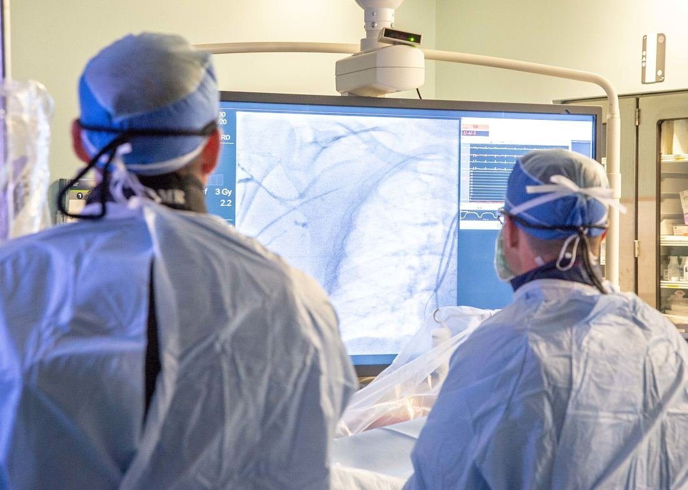
צינור דק נכנס דרך עורק ביד או במפשעה עד הלב. בלון מנופח במקום ההיצרות ופותח אותה.
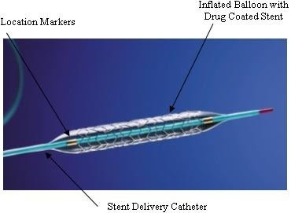
מחברים כלי דם מאזור אחר בגוף, והדם עוקף את החסימה.
מורידות לחץ דם וכולסטרול, ומקטינות היווצרות קרישים.
| מחלה | איזה כלי דם? | מה השתנה במבנה? | מה התוצאה לגוף? |
|---|---|---|---|
| טרשת עורקים | עורקים | רובד בדופן, חלל צר, דופן קשיחה | פחות דם וחמצן לרקמה |
| התקף לב | עורק כלילי | קריש על רובד חוסם את העורק | תאי שריר הלב מתים |
| שבץ מוחי | עורק במוח | חסימה בקריש או קרע | תאי מוח נפגעים |
| יתר לחץ דם | עורקים | לחץ גבוה על הדופן לאורך זמן | פגיעה באנדותל, עומס על הלב |
| דליות | ורידי הרגליים | מסתמים פגומים, וריד מורחב | דם מצטבר ברגליים |
מה הקשר בין עישון, אנדותל וטרשת עורקים?
התקף לב ושבץ מוחי: מה דומה ומה שונה?
בחרו מחלה אחת וכתבו על פתק שלושה משפטים: איזה כלי דם נפגע? מה השתנה במבנה שלו? מה התוצאה לגוף?
התוכן מבוסס על מצגת מט״ח "לחץ דם וטרשת" (קורס גוף האדם בדגש הומיאוסטזיס), ועל המצגת "מחלות של כלי הדם" שנבנתה עם Tab.
הצילומים מ־Wikimedia Commons ברישיונות פתוחים: אמבולנס (Chenspec, CC BY-SA 4.0) · עורק בריא (Yale Rosen, CC BY-SA 2.0) · חתך עורק כלילי (Mikael Häggström, CC0) · אבי העורקים (CDC/PHIL, נחלת הכלל) · צנתור (Pantaleo et al., CC BY 2.0) · לב אחרי התקף (Mikael Häggström, CC0) · MRI שבץ (Mirza & Gokhale, CC BY 4.0) · מדידת לחץ דם (Beendy234, CC0) · וריד ודליות (NHLBI, נחלת הכלל) · דליות (Lakeland1999, נחלת הכלל) · עישון (AnatoLensStudy, CC BY 4.0) · מד סוכר (Tomwsulcer, CC0) · סלט (HaJunkiyada, CC BY-SA 4.0) · רכיבה (Wilfredor, CC BY-SA 4.0) · חדר צנתורים (Navy Medicine, נחלת הכלל) · תומכן (FDA, נחלת הכלל).
היחידה מתבססת על חומרי מט״ח ומורחבת בחומרים נוספים.